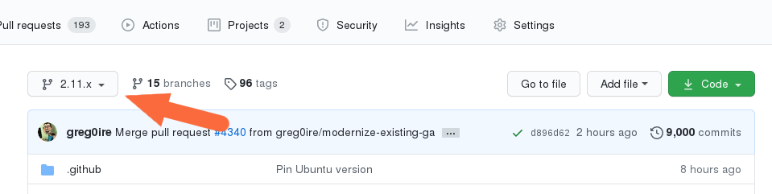

Contribute
Welcome to the Doctrine Project Contributors Guide. This documentation aims to document how contributors and maintainers should work when using git, development workflow, build process, dependency management, etc.
About
The Doctrine Project is the home of a selected set of PHP libraries primarily focused on providing persistence services and related functionality. Its prize projects are the Object Relational Mapper and the Database Abstraction Layer it is built on top of. You can view a list of all projects on the website.
Contributors vs Maintainers
Before continuing you need to understand the difference between a contributor and a maintainer.
- Contributor: A contributor is someone from the outside not on the core development team of the project that wants to contribute some changes to a project.
- Maintainer: A maintainer is someone on the core development team of the project and has commit access to the main repository of the project.
Contributor Workflow
Who is a contributor? A contributor can be anyone! It could be you. Continue reading this section if you wish to get involved and start contributing back to a Doctrine project.
Initial Setup
We are assuming you have cloned the project, have a Github account, and have forked the project. If any of this sounds unfamiliar, please learn about that first.
When cloning, you will end up with a remote called origin. This can
be confusing because sometimes, people use origin to refer to their
fork, some other times they use it to refer to the original project.
To avoid confusion, we recommend you remove origin altogether:
$ git remote remove originTo make the example commands given in the rest of this page less
ambiguous, we will add two explicit names for remote Git repositories:
doctrine for the original Doctrine project you're contributing to, and
fork for your fork of it.
$ [`cd` into the directory created by `git clone ...`]
$ git remote add doctrine git@github.com:doctrine/.git
$ git remote add fork git@github.com:/.git Choosing the right branch
Before you start working on a feature or a bug fix, you need to choose which branch you are going to contribute to. We try hard to follow semver, which means there are three choices.
Let's say the latest version of the project is 2.3.1. The following branches should exist and are the possible choices:
2.3.xfrom which the next patch release will be tagged (2.3.2, 2.3.3, etc.);2.4.xfrom which the next minor release will be tagged (2.4.0);3.0.xfrom which the next major release will be tagged (3.0.0).
To find out what's the latest version, you can check the Releases block on the project's Github page. Alternatively, you can check Packagist.
Anything you contribute to a branch will be merged up to higher branches
at some point. For example, if you contribute to 2.3.x, your changes
will eventually land on 2.4.x and 3.0.x.
The general rules are as follows:
- Patch releases should be as stable as possible. They fix bugs, but avoid making changes as much as possible.
- Improvements and additions are being made on the upcoming minor release branch.
- An upgrade to a new minor version must not require any changes on the user's side.
- There must be a clear upgrade path from one major version to the next. That means necessary changes on the user's side will be advertised through deprecation notices, if anyway possible.
- Deprecations may be added for new minor versions only.
- Before a feature is removed (or an API changed) in a major version release, a corresponding deprecation notice must be included in a minor version release preceding it.
- If a replacement feature and/or alternative API will be provided, it must be available in the minor release that adds the deprecation for the old feature.
With that in mind, things that can go on the patch release branch include:
- bugfixes;
- adding tests, especially for bugs that were fixed;
- updates, corrections or improvements to non-code assets like documentation, build scripts or tooling configuration;
- fixes to incorrect phpdoc comments (docblock type declarations, etc.);
- updates, corrections or improvements to code comments that are not phpdoc comments;
When phpdoc comments are imprecise but not wrong technically, target the next minor release branch instead. |
The next minor version branch may include:
- refactorings, unless they are necessary for a bugfix. This is to avoid unnecessary risks.
- new deprecations - read our Dedicated policy to figure out how to contribute those.
- adding new features and/or public APIs;
On the next major version branch, usually only deprecations notices, deprecated features and necessary compatibility layers are being removed.
Avoid surprising changes in public APIs on the next major version branch if anyhow possible. In order to provide a smooth upgrade path to users, the preferred solution is to add deprecations and possibly alternative APIs in a preceding minor version, and only remove the deprecations and compatibility layers in the next major release.
Have you made your choice? Good. You now need to create a topic branch.
Creating a topic branch
You should avoid making changes directly on the patch, minor or major release branches, also in your fork of the repository. That makes it difficult for you to have more than one pull request at a time, and also complicates matters should you need to rebase your work to another base branch some time later on. Instead, for every change that you would like to propose, create a dedicated topic branch.
If that does not sound all too familiar, you might want to read about GitHub Flow for additional background information |
Time might have elapsed since the last time you contributed or since you
cloned the repository. You might want to fetch the latest changes from
the doctrine remote:
$ git fetch doctrineRemember, we assume that |
I know it sounds awful, but the next step is to deal with one of the 2 hard problems in computer science and come up with a name for your branch. Pick something meaningful.
If you have a feature to contribute that adds support for a new database
called YourSQL, you could create a branch called your-sql-support
from the next minor branch:
$ git switch --create your-sql-support doctrine/2.4.x # use -c for shortHere, using doctrine/2.4.x instead of just 2.4.x means you do
not have to switch to 2.4.x and update it first.
Now do your changes, and when you are done, you need to commit them.
To pick the right changes, we recommend you use git add --patch. It
will force you to review what you are about to commit.
$ git add --patch # use -p for shortLikewise, when you commit, we recommend you use --verbose. It will
show the diff again in your editor.
$ git commit --verbose # use -v for shortIt is important that you pause here and make the effort of writing a meaningful commit message.
Crafting meaningful commit messages
Commit messages should look like emails, meaning they should have a subject, but also a body. The subject should be on the first line, and not exceed 50 chars. It should tell us what you did, and every change in the diff should have to do with that subject. The body should be separated from it by a blank line and should tell us why you did what you did. That is also a good place to tell people about alternate solutions that were considered and the reasons for rejecting them. Links to related issues are more than welcome, but should be summarized so that the pull request can be understood without resorting to them. Ideally, the git history should be understandable without a network connection. Here is an example of a good although fictitious commit message:
Call foo::bar() instead of bar::baz()
This fixes a bug that arises when doing this or that, because baz()
needs a flux capacitor object that might not be defined.
I considered calling foobar(), but decided against because
$nonObviousYetVeryGoodReason
Fixes #42
Wrap the lines in the commit body at 72 chars to make commits easier to read in different tools.
There are already a few articles (or even single purpose websites) about this in case you want to read more about this:
Once you are done, you can push your branch to your fork:
$ git push --set-upstream fork your-sql-support # use -u for shortCreating the pull request
New pull requests are created with the repository's default branch as base branch, and that might not be what you want.
The base branch should be what you chose according to the guidelines mentioned in the beginning of this chapter. It is also the branch name that you provided when you created your topic branch.
Make sure to pick the correct branch when creating the pull request. If you do not, it can still be changed afterwards (see the dedicated section below).
The default branch is the branch you see when you enter the repository page on GitHub.
In this DBAL example, it's the branch with the name 2.11.x. The branch name reflects the current lowest supported version of a repository.
To squash or not to squash
The best way to avoid having to squash anything in the first place is to
amend your last commit if that's indeed where your extra change is meant
to go. That being said, sometimes you end up with many commits and it's
too late for that. Some other times, code review has already started and
it can be better not to touch already reviewed commits. You can signal
that they should ultimately be squashed by using git commit
--fixup=HEAD, which will also spare you the creation of a commit
message since it will reuse the previous one.
Now let's say that code review is finished, or that it hasn't started, and that you want to squash some commits.
If you are in the fairly simple case where you want squash all your commits into one, you can take the following steps described in the manual to achieve that.
If you are in a more complex case where you would very much like to keep
your commits separate, there are other solutions.
To take a specific example, let us say that you made 3 commits A, B, C,
and you have CS issues in A and in C.
To make sure that is no longer the case, fixing each of these commits
can be done like this:
git rebase --exec "vendor/bin/phpcbf && vendor/bin/phpcs" A^
That command will run phpcbf and then phpcs for each of your commits and
will halt for A and C, but not for B because in the case of B they would
exit with a zero status code. That will let you amend A, after which you
can resume the rebase until you do the same for C. Here is how it would
look like on A:
$ vendor/bin/phpcs # check for issues phpcbf could not fix
$ git add -p # commit whatever issues were fixed
$ git commit --amend # change A
$ git rebase --continue # resume the rebaseYou should be able to apply the example above with any tool we use in our CI pipelines, such as PHPUnit, PHPStan or Psalm.
git rebase --interactive is a really powerful tool and we barely
scratched the tip of the iceberg here. If you want to learn more about
it, we recommend you watch this talk from Pauline Vos
Of course, if you want to craft good commits with good messages, you
will have a hard time if the changeset you are describing does too many
things. That might very well happen if you notice small things along the
way that are unrelated to your PR, but too small to warrant a separate
one. git add --patch or git add -p will be of invaluable help to
commit things separately.
On the contrary, there are commits that typically do not need to exist,
such as commits that fix coding style or address minor review comments.
Bear in mind that the git log is not only aimed at reviewers, but also
at anyone who wants to understand some change you made. Do not distract
them with cs fixes. Instead, try to produce a commit that contains your
changes and the necessary fixes to pass coding standard checks.
Also, it's best if all of your commits pass the build, because that
makes them git bisect friendly, but it also means they are likely to
be revertable independently from other commits in your PR. While being
revertable is not particularly crucial to us, it can help you decide
whether to squash or whether to split. For instance, it would not make
sense to revert a commit documenting a feature without also reverting
the code for that feature. That means there should be only once commit
with both the code and the docs here.
Rebasing
On upstream changes
Sometimes, you will need to rebase your branch on the latest changes, typically because the build had an issue unrelated to your changes, and that issue has been fixed after you created your branch.
Basically, a rebase takes all changes on your topic branch and moves them to another starting point. This starting point was the Doctrine branch that you chose when you created your topic branch, at that point in time. The rebase will move your changes to be based on the current state of this branch.
Here is how to proceed if you need to rebase on 2.3.x:
- Switch to the branch you would like to rebase.
- Fetch all new commits:
git fetch doctrine. - Rebase on what you fetched:
git rebase doctrine/2.3.x - If you run into a conflict, fix it and add the resolved conflicts
(you can do that with
git mergetoolfor instance), then continue on your merry way withgit rebase --continue. - Force push to overwrite the previous version :
git push --force.
On another branch
Another case where you need a rebase is when you want to change the
target branch of your PR. For instance, you might have created your PR
against 2.3.x but you are told to change it to 2.4.x. In that
case, the following command will pick all changes that you made against
the 2.3.x branch, and re-apply them on the current 2.4.x branch.
$ git fetch doctrine
$ git rebase --onto doctrine/2.4.x doctrine/2.3.x your-topic-branch
$ git push --forceAfter that, you also need to update the GitHub pull request to point to the new target branch. You can do so by clicking on the Edit button next to the pull request title. After you changed the target branch, the pull request should only show your commits and changes, but this time they are based on the new target branch.
Project Dependencies
Project dependencies between Doctrine projects are handled through composer. The code of the particular Doctrine project you have cloned is located under lib/Doctrine. The source code of dependencies to other projects resides under vendor/.
To bump/upgrade a dependency version you just need to update the version constraint in composer.json and run:
$ composer updateDealing with checks and tools
We get lots of PRs, and each of them goes though a series of checks that
should catch obvious mistakes, so that we can focus on higher order
issues. The checks are fairly standardized across all our projects, so
here is a list of the most common ones and how to deal with them.
Before you can run any of these locally, you will need to install
dependencies with composer install.
Coding standard check
We use PHP_CodeSniffer along with the Doctrine Coding Standard.
To get a list of coding standard issues, run:
$ vendor/bin/phpcsTo automatically fix some of the issues, run:
$ vendor/bin/phpcbfSome issues are impossible to fix automatically, so you will have to fix them manually.
Static analysis
We use two different static analysis tools, that can be complementary:
Here is how to run both tools:
$ vendor/bin/psalm
$ vendor/bin/phpstanIt might happen that these tools report false positives. In that case,
we try to report the false positives upstream, and then we ignore them
in psalm.xml or phpstan.neon, along with a link to the bug
report.
When things get overwhelming, for instance when upgrading Psalm or PHPStan, we use baseline files, but as a last resort: it's better to have new code pass analysis with the latest version of the tools than to block the ugprade until every single issue is addressed.
If you are looking for something to contribute, you can try to reduce the baseline files in repositories that have them. This might happen accidentally when working on code, and both tools are configured to let you know when you should remove lines from the baseline.
We never rely on @psalm-suppress except in some Symfony bundles. We
are aware of this inconsistency, and might resolve it someday. Until
then, try to be consistent with the repository you are contributing to.
Both tools understand most of each other annotations, and we use
@psalm--prefixed annotations and let PHPStan do the translation. We
use prefixed annotations for advanced features that are not understood
by all IDEs yet.
Tests
We use PHPUnit for our tests. You can run them
with vendor/bin/phpunit. We often have more than just one PHPUnit
check, because we want to run them with different versions of PHP, or
with different versions of infrastructure components (e.g. different
RDBMS), etc. All these jobs produce coverage reports, which are gathered
and sent to Codecov. If you see a coverage drop, it is likely that you
are missing a test for some code you added.
Running checks before pushing
Rather than starting many containers on a remote infrastructure to
figure what is wrong with your code, running some of the checks locally
before pushing is never a bad idea. You can do so by creating a
.git/hooks/pre-push file or even a .git/hooks/pre-commit file
with the following content:
#!/bin/bash
set -e
echo ''|vendor/bin/phpcs
vendor/bin/phpstan
vendor/bin/psalm
vendor/bin/phpunitGetting your PR reviewed
Doctrine is a huge project, and we get lots of PRs. It is natural for maintainers to focus on PRs that have green checks. If you want to get a review on your PR despite red checks, be explicit about that, otherwise we might assume that you are still working on it. We try never to merge PRs with red checks, even if the failure is unrelated to the PR. This avoids situations where some failures are unrelated to the PR, but some are not, and we end up merging a PR that breaks the build even more.
If you know you are not done but still want to get a review, you can mark your PR as Draft, and then ask for the review. This way, we know you acknowledge that the PR is not ready to be merged, and just want guidance or a basic approval before you put more effort into it. We are not mind readers though, so the best way to get exactly what you want is to explicitly ask for it.
Note that because of the integration between Github and automated tools, PRs with a lot of coding standard or static analysis issues might be quite hard to review, with all the noise added by automated comments in the diff. Despite what is said previously, you might want to fix as many issues as easily doable before asking for a review.
Security Disclosures
You can read more about how to report security issues in our Security Policy.
Maintainer Workflow
You can learn more about the maintainer workflow here. Continue reading if you are interested in learning more about how to get started with your first contribution.
Website
The doctrine-project.org website is completely open source! If you want to learn how to contribute to the Doctrine website and documentation you can read more about it here.